How to Choose the Right Fonts for a Brand
Fonts influence how customers feel about a brand. Learn how to combine typefaces, create hierarchy and keep business designs readable.
Read article →Professional Graphic Design Services
Loading page...Explore design fundamentals, Adobe Photoshop and Illustrator workflows, branding, print design, social media graphics and productivity tips.
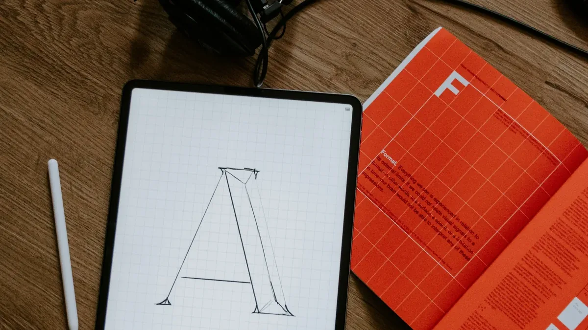
Fonts influence how customers feel about a brand. Learn how to combine typefaces, create hierarchy and keep business designs readable.
Read article →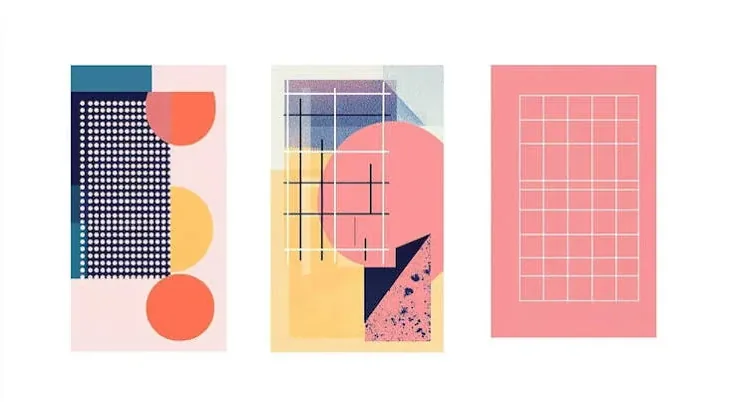
Learn the core principles of contrast, alignment, repetition, proximity, balance and visual hierarchy.
Read article →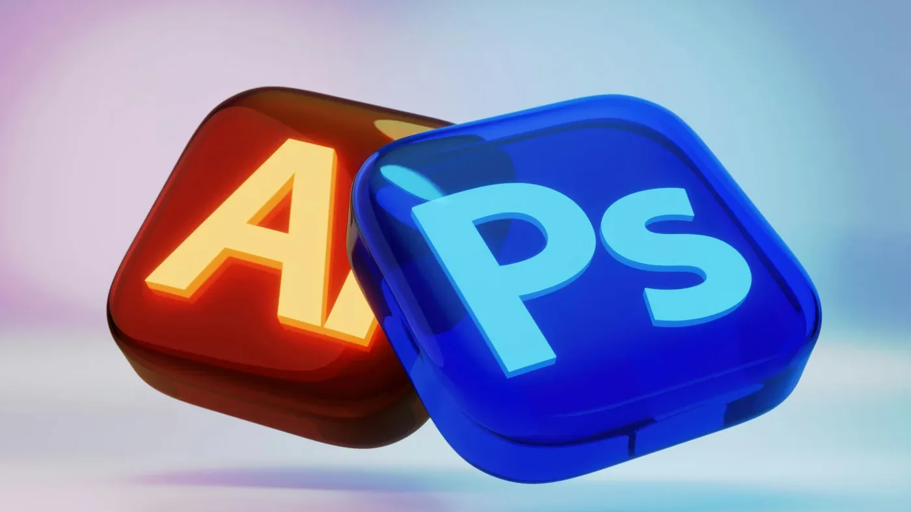
Understand the practical difference between raster and vector workflows and when Photoshop or Illustrator is the better choice.
Read article →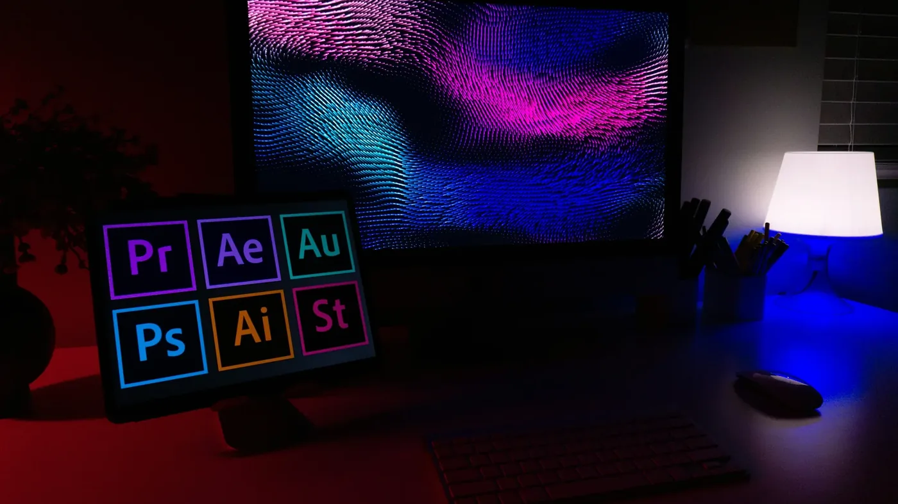
Layers are one of the most important Photoshop concepts. Learn how to organize, rename, group and edit them efficiently.
Read article →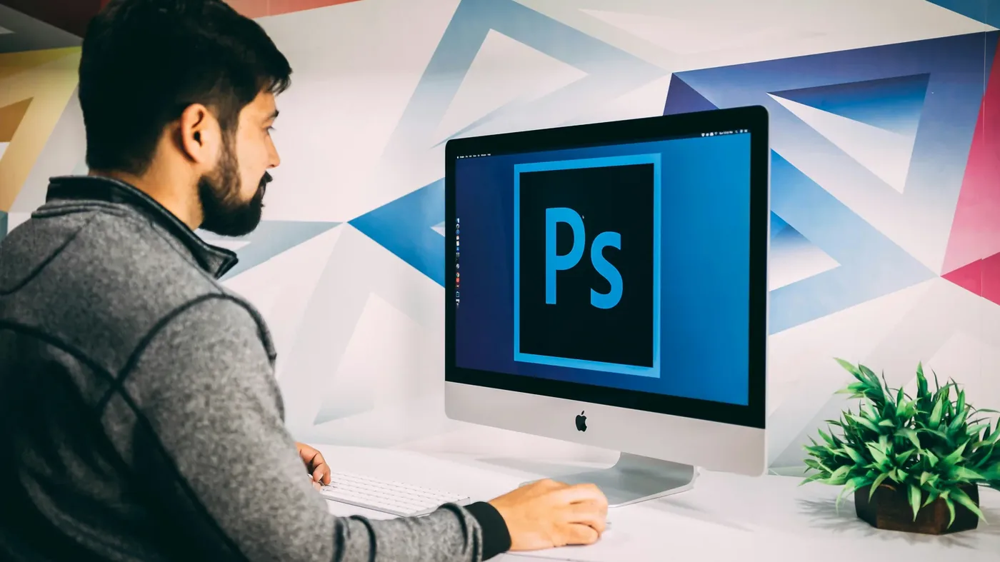
A practical introduction to the Marquee, Lasso, Object Selection and other tools used to isolate parts of an image.
Read article →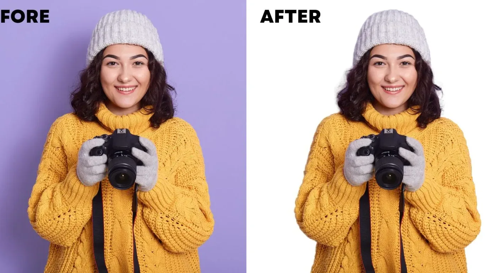
Learn the clean workflow for removing backgrounds and preparing images for posters, product graphics and social media designs.
Read article →The Pen Tool becomes much easier when you understand anchor points, handles, curves and path editing.
Read article →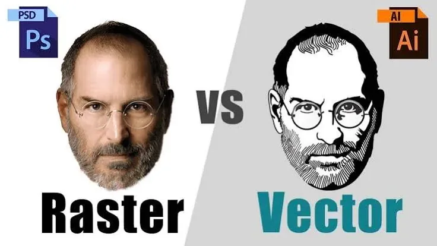
Discover why logos are usually built as vectors while photographs are normally raster images, and why that matters for printing.
Read article →
A good flyer communicates quickly. Learn how to structure the headline, offer, imagery, contact details and call to action.
Read article →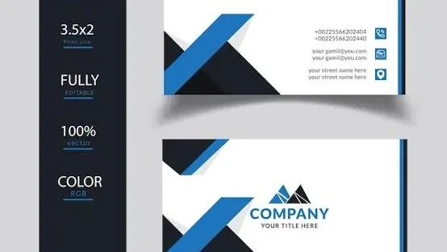
Learn practical rules for hierarchy, margins, typography, logo placement and preparing business cards for print.
Read article →Learn how to plan social media graphics for mobile screens, strong visual hierarchy and consistent branding.
Read article →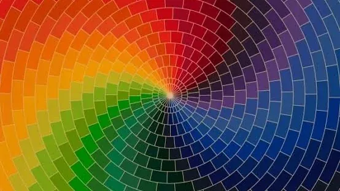
Learn hue, saturation, value, complementary colours, analogous palettes and how colour affects communication.
Read article →
Grids help designers create alignment and consistency. Learn how to use columns, margins and spacing without making designs feel rigid.
Read article →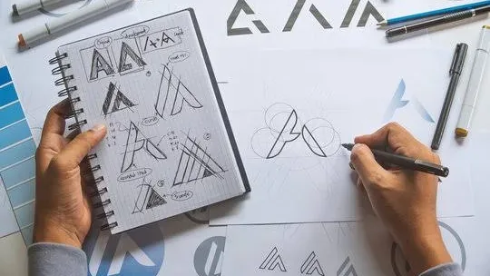
Follow a practical logo workflow from client discovery and sketches through vector artwork, revisions and final exports.
Read article →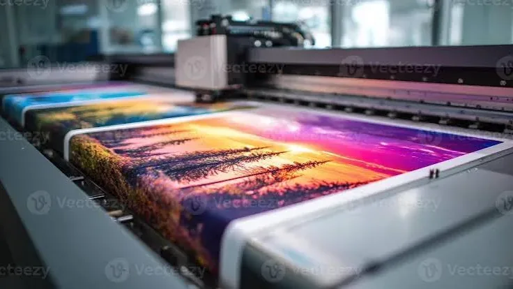
Before sending artwork to a printer, check colour mode, resolution, bleed, trim, margins and file format.
Read article →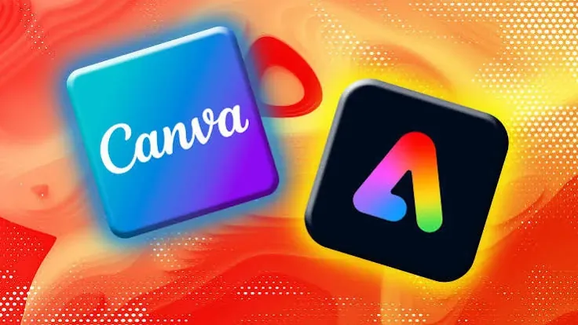
Compare the strengths of Canva, Photoshop and Illustrator for beginners, social media work, branding and professional production.
Read article →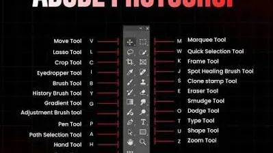
A small set of keyboard shortcuts can save significant time. Build a faster workflow in Photoshop and Illustrator.
Read article →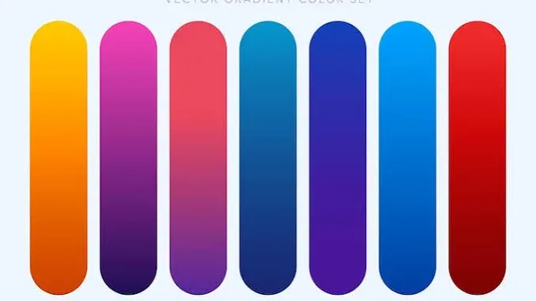
Learn how to choose primary, secondary and accent colours that work across websites, social media and printed materials.
Read article →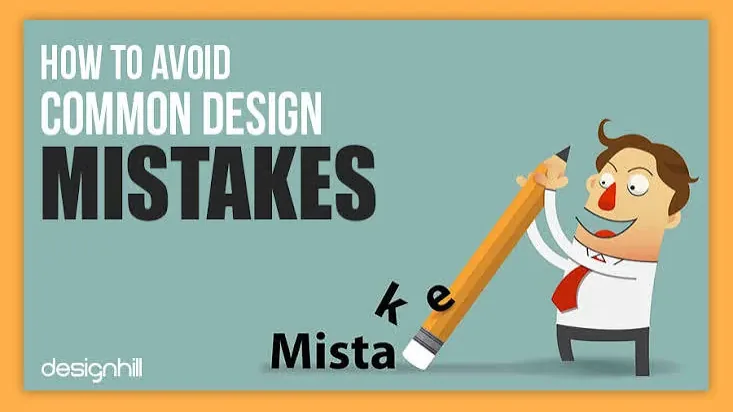
From weak hierarchy to overcrowding and poor image quality, learn the mistakes that can make an otherwise good design look amateur.
Read article →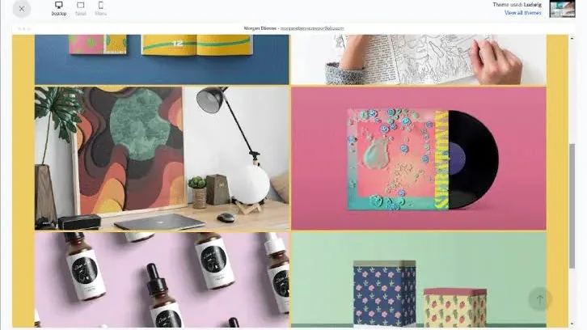
A strong portfolio should show thinking, process and results—not just a collection of pretty pictures. Learn how to structure yours.
Read article →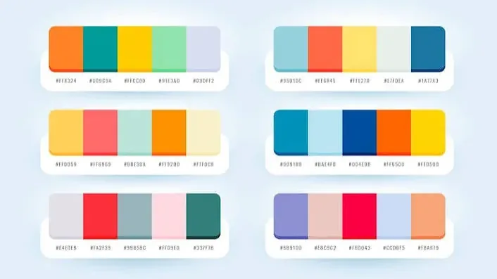
A strong brand helps customers recognize and trust your business.
Read article →A practical guide to making a business logo clear, memorable and useful across different platforms.
Read article →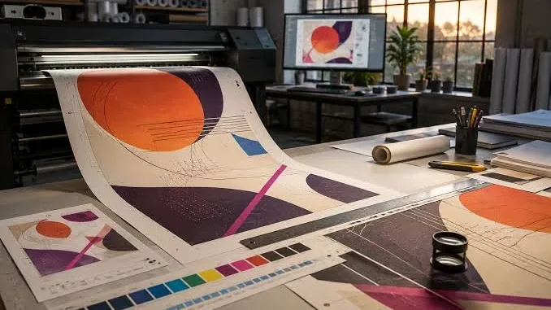
Learn when to use RGB and when to use CMYK so your designs work properly on screens and in print.
Read article →